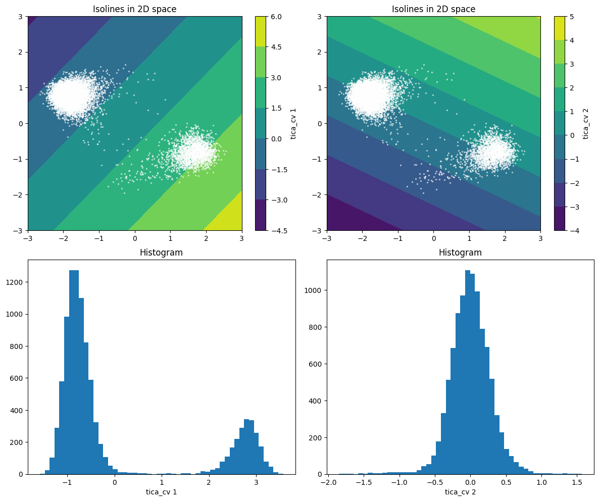
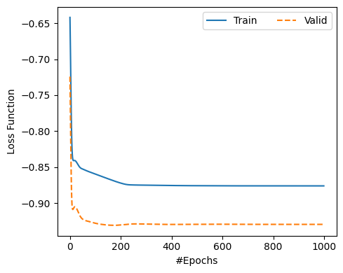
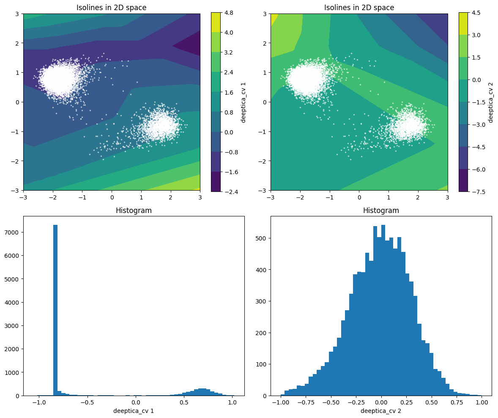

TICA & Deep-TICA - Toy model#
Data-driven collective variables optimized as to match the slow dynamical modes of the system, using a linear combination or a neural network as basis function.
System: Wolfe-Quapp 2D potential (rotated), standard molecular dynamics simulation
Setup#
import torch
import numpy as np
import matplotlib.pyplot as plt
from mlcvs.utils.io import load_dataframe
Helper function to load data
def load_dataset_2d_model():
"""Load trajectory of Langevin dynamics on 2d toy model"""
# Load data
data = load_dataframe("data/2d_model/COLVAR_md")
data = data[::50]
X = data.filter(regex='p.').values
names = data.filter(regex="p.*").columns.values
t = data['time'].values
return X, t, names
Plotting functions
def plot_isolines_grid(cv,limits=((-3,3),(-3,3)),num_points=(50,50),scatter=None,axs=None):
if type(num_points) == int:
num_points = (num_points,num_points)
# Get number of outputs
params = cv.get_params()
if 'n_hidden' in params:
n_out = params['n_hidden']
else:
n_out = params['n_features']
# Define grid and evaluate cv on it
xx = np.linspace(limits[0][0],limits[0][1],num_points[0])
yy = np.linspace(limits[1][0],limits[1][1],num_points[1])
xv, yv = np.meshgrid(xx, yy, indexing='xy')
z = [ np.zeros_like(xv) for _ in range(n_out) ]
for i in range(num_points[0]):
for j in range(num_points[1]):
xy = torch.Tensor([xv[i,j], yv[i,j]])
for k in range(n_out):
z[k][i,j] = cv(xy)[k]
# Setup plot
if axs is None:
_, axs = plt.subplots(figsize=(5,4.*n_out), dpi=100)
for k,ax in enumerate(axs):
axs.set_title(f'{cv.name_} {k+1} isolines')
# Plot countour plot
for k,ax in enumerate(axs):
h = ax.contourf(xx, yy, z[k])
cbar = plt.colorbar(h,ax=ax)
cbar.set_label(f'{cv.name_} {k+1}')
# Scatter plot with training data
if scatter is not None:
for ax in axs:
ax.scatter(scatter[:,0],scatter[:,1],s=2,c='white',alpha=0.5)
ax.set_aspect('equal')
def plot_cv_histogram(s,label=None,ax=None,**kwargs):
# Setup plot
if ax is None:
_, ax = plt.subplots(figsize=(5,4.), dpi=100)
ax.set_title('Histogram')
if (type(s)==torch.Tensor):
if s.ndim == 2:
s = s.squeeze(1)
s = s.detach().numpy()
# Plot histogram
ax.hist(s,**kwargs)
if label is not None:
ax.set_xlabel(label)
Linear Time-lagged independent component analysis (TICA) CVs#
References:
Schwantes, Pande, JCTC 2013.
Pérez-Hernández, … Noe, JCP 2013.
McCarty, Parrinello, JCP 2017.
Load data#
X, t, feature_names = load_dataset_2d_model()
Train CV#
from mlcvs.tica import TICA_CV
tica = TICA_CV(n_features=X.shape[1])
# to illustrate the usage with biased simulations (although this one has no bias)
bias = np.zeros_like(t)
lag = 50
tica.fit(X, t, lag=lag, logweights=bias)
# Get implied timescales
tica.tica.timescales(lag=100)
tensor([1191.6388, 21.0911])
Plot results#
_, axs = plt.subplots(2,2, figsize=(12,10), dpi=100)
# CV isolines
for ax in axs[0]:
ax.set_title(f'Isolines in 2D space')
ax.set_title(f'Isolines in 2D space')
plot_isolines_grid(tica, scatter=X, num_points=50, axs=axs[0])
# Calculate CV values over training set
for ax in axs[1]:
ax.set_title(f'Histogram')
s = tica(X)
for k,ax in enumerate(axs[1]):
plot_cv_histogram(s[:,k], label=tica.name_+' '+str(k+1),bins=50, ax=ax )
plt.tight_layout()

Get PLUMED input#
tica.set_params({"feature_names": feature_names})
print( tica.plumed_input() )
tica_cv1: CUSTOM ARG=p.x,p.y VAR=x0,x1 FUNC=0.716004*(x0+1.032009)-0.698096*(x1-0.411488) PERIODIC=NO
tica_cv2: CUSTOM ARG=p.x,p.y VAR=x0,x1 FUNC=0.429754*(x0+1.032009)+0.902946*(x1-0.411488) PERIODIC=NO
Deep-TICA: Use a neural network ansatz to approximate the slow modes#
Reference: Bonati, Piccini, Parrinello, PNAS 2021.
Load data#
from mlcvs.utils.data import create_time_lagged_dataset, FastTensorDataLoader
from torch.utils.data import Subset,random_split
X, t, feature_names = load_dataset_2d_model()
n_features = X.shape[1]
lag_time = 50
# to illustrate the usage with biased simulations (although this one has no bias)
bias = np.zeros_like(t)
# create dataset
dataset = create_time_lagged_dataset(X,t=t,lag_time=lag_time,logweights=bias)
# split train - valid
n_train = int( 0.9 * len(dataset) )
n_valid = len(dataset) - n_train
train_data, valid_data = random_split(dataset,[n_train,n_valid])
#train_data = Subset(dataset, np.arange(2*n_train))
#valid_data = Subset(dataset, np.arange(2*n_train,len(dataset)))
# create dataloaders
train_loader = FastTensorDataLoader(train_data, batch_size=len(train_data))
valid_loader = FastTensorDataLoader(valid_data, batch_size=len(valid_data))
print('Time-lagged pairs:\t',len(dataset))
print('Training data:\t\t',len(train_data))
print('Validation data:\t',len(valid_data))
Time-lagged pairs: 9997
Training data: 8997
Validation data: 1000
Train CV#
from mlcvs.tica import DeepTICA_CV
model = DeepTICA_CV(layers=[2,10,2])
model.set_earlystopping(patience=20)
model.set_loss_function(objective='sum')
model.fit(train_loader, valid_loader,
nepochs=1000, log_every=10)
Epoch Train Loss Valid Loss
10 -0.8316 -0.9064
20 -0.8409 -0.9052
30 -0.8450 -0.9096
40 -0.8503 -0.9175
50 -0.8526 -0.9221
60 -0.8540 -0.9241
70 -0.8556 -0.9251
80 -0.8569 -0.9260
90 -0.8582 -0.9270
100 -0.8595 -0.9280
110 -0.8608 -0.9287
120 -0.8621 -0.9293
130 -0.8635 -0.9298
140 -0.8648 -0.9302
150 -0.8661 -0.9306
160 -0.8674 -0.9308
170 -0.8686 -0.9309
180 -0.8699 -0.9309
190 -0.8711 -0.9307
200 -0.8721 -0.9304
210 -0.8731 -0.9302
220 -0.8740 -0.9299
230 -0.8745 -0.9294
240 -0.8747 -0.9291
250 -0.8748 -0.9290
260 -0.8749 -0.9289
270 -0.8750 -0.9290
280 -0.8750 -0.9290
290 -0.8751 -0.9291
300 -0.8751 -0.9292
310 -0.8752 -0.9293
320 -0.8752 -0.9294
330 -0.8753 -0.9295
340 -0.8753 -0.9295
350 -0.8754 -0.9296
360 -0.8754 -0.9296
370 -0.8755 -0.9297
380 -0.8755 -0.9297
390 -0.8755 -0.9297
400 -0.8756 -0.9297
410 -0.8756 -0.9297
420 -0.8756 -0.9297
430 -0.8757 -0.9297
440 -0.8757 -0.9296
450 -0.8757 -0.9296
460 -0.8757 -0.9296
470 -0.8758 -0.9296
480 -0.8758 -0.9296
490 -0.8758 -0.9295
500 -0.8759 -0.9296
510 -0.8759 -0.9295
520 -0.8759 -0.9295
530 -0.8759 -0.9295
540 -0.8759 -0.9295
550 -0.8759 -0.9295
560 -0.8759 -0.9295
570 -0.8760 -0.9294
580 -0.8760 -0.9294
590 -0.8760 -0.9294
600 -0.8760 -0.9294
610 -0.8760 -0.9294
620 -0.8760 -0.9294
630 -0.8760 -0.9294
640 -0.8760 -0.9294
650 -0.8760 -0.9295
660 -0.8760 -0.9295
670 -0.8760 -0.9296
680 -0.8760 -0.9296
690 -0.8760 -0.9296
700 -0.8760 -0.9296
710 -0.8761 -0.9296
720 -0.8761 -0.9297
730 -0.8761 -0.9297
740 -0.8761 -0.9297
750 -0.8761 -0.9296
760 -0.8761 -0.9296
770 -0.8761 -0.9296
780 -0.8761 -0.9296
790 -0.8761 -0.9296
800 -0.8761 -0.9296
810 -0.8761 -0.9296
820 -0.8761 -0.9296
830 -0.8761 -0.9296
840 -0.8761 -0.9296
850 -0.8761 -0.9296
860 -0.8761 -0.9296
870 -0.8761 -0.9296
880 -0.8761 -0.9296
890 -0.8761 -0.9296
900 -0.8761 -0.9296
910 -0.8761 -0.9296
920 -0.8761 -0.9296
930 -0.8761 -0.9296
940 -0.8761 -0.9296
950 -0.8761 -0.9296
960 -0.8761 -0.9296
970 -0.8761 -0.9296
980 -0.8761 -0.9296
990 -0.8761 -0.9296
1000 -0.8761 -0.9296
Plot learning curve#
fig, ax = plt.subplots(figsize=(5,4),dpi=100)
loss_train = [x.cpu() for x in model.loss_train]
loss_valid = [x.cpu() for x in model.loss_valid]
# Loss function
ax.plot(loss_train,'-',label='Train')
ax.plot(loss_valid,'--',label='Valid')
ax.set_ylabel('Loss Function')
#if model.earlystopping_.early_stop:
# ax.axvline(model.earlystopping_.best_epoch,ls='dotted',color='grey',alpha=0.5,label='Early Stopping')
ax.set_xlabel('#Epochs')
ax.legend(ncol=2)
plt.tight_layout()
plt.show()

Plot results#
_, axs = plt.subplots(2,2, figsize=(12,10), dpi=100)
# CV isolines
for ax in axs[0]:
ax.set_title(f'Isolines in 2D space')
ax.set_title(f'Isolines in 2D space')
plot_isolines_grid(model, scatter=X, num_points=50, axs=axs[0])
# Calculate CV values over training set
for ax in axs[1]:
ax.set_title(f'Histogram')
s = model(torch.Tensor(X))
for k,ax in enumerate(axs[1]):
plot_cv_histogram(s[:,k], label=model.name_+' '+str(k+1),bins=50, ax=ax )
plt.tight_layout()
